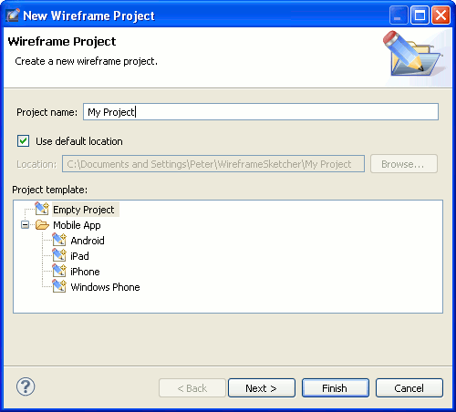

WireframeSketcher works with any project type. Eclipse users can use existing PHP, Java or other projects for wireframes too. However there is a handy Wireframe Project wizard that helps you get started. To open it use File > New > Wireframe Project.

Specify a project name, optionally change its location and then choose a template to create your project from. There are a few handy templates for mobile apps. If you are wireframing a website or a desktop app then choose Empty Project as a template.
On the next page you can optionally configure project references that are useful for sharing project assets. Click Finish to create the project. A new screen file is automatically created and open.
Next: Managing Project Assets